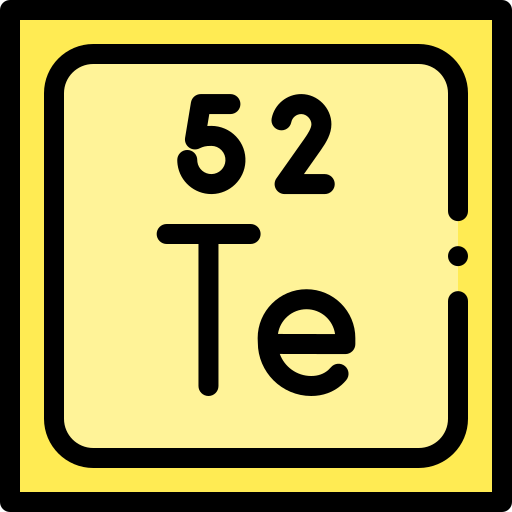
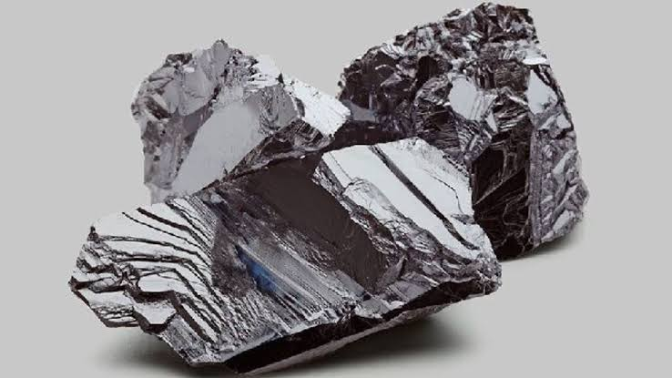

Telúrio
Pesquisa sobre o Telúrio – Samuel Fagundes de Souza
Principais características
- Nome
- Telúrio
- Símbolo
- Te
- Estado em temperatura ambiente
- Sólido
- Aparência e coloração
- Minério com cor prateada brilhante
- Principais propriedades
- Massa atômica de 127,6 u e número atômico igual a 52


História da descoberta
- Ano
- Por volta de 1782
- Cientista
- Franz Joseph Müller von Reichenstein
Trabalhando em uma mina na Transilvânia, Franz teria a atenção chamada por um brilho metálico. Achava que se tratava de antimônio nativo ou de bismuto, mas, depois de uma pesquisa preliminar, determinou que era telureto de ouro, também chamado de calaverita.
Pesquisando o minério por alguns anos, o cientista provou que havia um novo elemento nele. Sua publicação, porém, não ganhou tração. Só em 1796 ele enviou uma amostra ao amigo alemão Martin Klaproth, que confirmou a descoberta, produziu uma amostra pura do novo elemento e o batizou de telúrio.
Ocorrência na natureza
- Onde é encontrado
- Normalmente como telureto, que é o telúrio combinado a outro elemento, geralmente ouro, prata, cobre ou níquel
- Como é encontrado
- Junto de outros minérios
- Onde está presente
- Principalmente no cobre
Uso no cotidiano
- Células solares: o telúrio é usado para produzir telureto de cádmio, material das células solares de película fina.
- Ligas de metais: na metalurgia, entra como aditivo em ligas de cobre ou aço inoxidável para aumentar a maquinabilidade e facilitar a fresagem.
- Lentes infravermelhas: é usado para fazer lentes de infravermelho.
- Medicina nuclear: o telúrio-132 é usado como marcador radioativo em exames, pois emite raios gama detectados por um equipamento especial.
Importância ou riscos
O telúrio pode causar irritação na pele. Também não é recomendado inalá-lo: o cheiro é forte, parecido com o do enxofre, e pode impregnar se houver contato com o elemento.